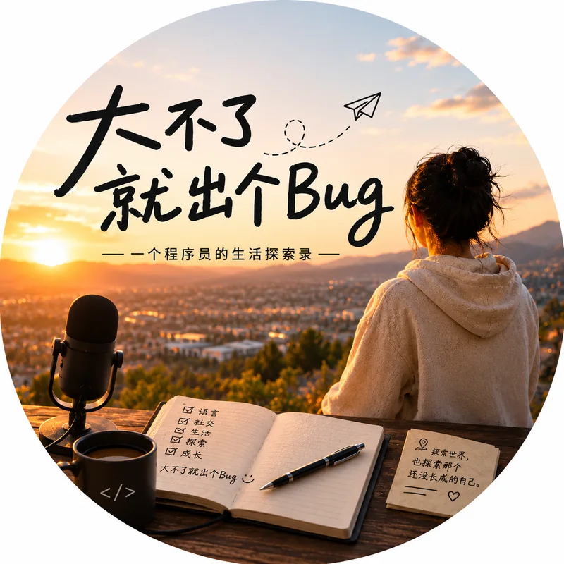

ABOUT THE MAKER / 关于我A LITTLE CONTEXT
写代码，
也写下日子。Writing code.
Keeping a record.
我是一个程序员，也独立做一些 App 和桌面工具。许多想法都从很小的地方开始：读到一句想留下的话，学一门还不熟悉的语言，或是在剪一段录音时，觉得这里也许可以顺手一点。于是动手试试，一点点把它做出来。I’m a programmer, and I build apps and desktop tools of my own. Most ideas begin with something small: a sentence I want to keep, a language I’m still learning, or a moment while editing audio when I think this could be a little easier. So I try making something, a bit at a time.
代码之外，我也录播客、写几行英文小诗，偶尔往山里走。这个网站把它们放在一起，像一本没有写完的笔记。至于「大不了就出个 Bug」，是给自己的宽慰：不必事事想明白了才开始，出了错，还有下一次修改。Away from code, I record a podcast, write short poems in English, and sometimes head for the hills. This website keeps those things together, like a notebook still being filled. “Worst Case, a Bug” is a little reassurance to myself: I can begin before I have everything figured out. There is always another revision.

有些话，也可以写在信里。Some things begin with a letter.
聊一个想法，反馈一个 Bug，或只是打声招呼。欢迎写信来。Share an idea, tell me about a bug, or simply say hello. You’re welcome to write.
hello.worstcaseabug@gmail.com